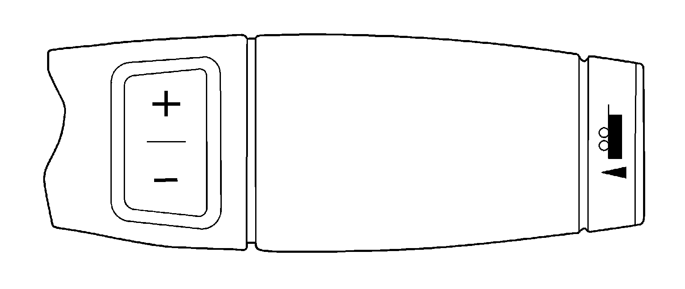

Tow/Haul Switch/Indicator Always On or Inoperative
Tow/Haul Switch/Indicator Always On or Inoperative
Tow/Haul Switch/Indicator Always On or Inoperative:

Circuit/System Description
Tow/haul mode enables the operator to achieve enhanced shift performance when towing or hauling a load. When tow/haul mode is selected, the tow/haul switch input signal to the body control module (BCM) is momentarily toggled to zero volts. This signals the powertrain control module (PCM) to extend the length of time between upshifts and increase transmission line pressure. Cycling the tow/haul switch again disables tow/haul mode and returns the transmission to a normal shift pattern. The tow/haul switch is a momentary switch and is normally open. The internal spring in the switch will always cause the switch state to return to open when not held in to the closed position.
Diagnostic Aids
If the electrical circuit checks are OK and the tow/haul shift pattern is not occurring, there may be a mechanical/hydraulic condition that prevents tow/haul operation. Refer to Symptoms - Automatic Transmission. - Symptoms - Automatic Transmission
Reference Information
Schematic Reference
Automatic Transmission Controls Schematics
Connector End View Reference
^ Automatic Transmission Inline 16-Way Connector End View
^ Automatic Transmission Internal Connector End Views
^ Automatic Transmission Related Connector End Views
^ Data Communication Connector End Views
Scan Tool Reference
^ Scan Tool Output Controls
^ Scan Tool Data List
^ Scan Tool Data Definitions
DTC Type Reference
^ Diagnostic Trouble Code (DTC) Type Definitions
^ Diagnostic Trouble Code (DTC) List/Type
Electrical Information Reference
^ Circuit Testing
^ Connector Repairs
^ Testing for Intermittent Conditions and Poor Connections
Circuit/System Verification
With a scan tool observe the Tow/Haul switch parameter in Body Controls data list, operate the Tow/Haul switch several times, and observe the parameter as you operate the switch with the transmission in Drive. The parameter should toggle between Active and Inactive when the switch is operated.
Circuit/System Testing
1. Ignition Off, transmission in Park or Neutral, disconnect the Tow/Haul switch connector.
2. Test for less than 1 Ohm of resistance between the Tow/Haul switch signal circuit terminal B and ground.
^ If greater than the specified range, test the ground circuit for an Open/High resistance.
3. Ignition On, verify the scan tool parameter Park/Neutral displays Inactive.
^ If not the specified value, test the signal circuit for a short to ground. If the circuit tests normal, replace the BCM.
4. Install a fused jumper between the signal circuit and ground. Verify the scan tool parameter displays Active.
^ If not the specified value, test the signal circuit for a short to voltage or an open/high resistance. If the circuit tests normal, replace the BCM.
5. If all circuits test normal, replace the Tow/Haul switch.
Component Testing
1. Ignition Off, transmission in Park or Neutral, disconnect the transmission Tow/Haul switch assembly.
2. Test for infinite resistance between the Tow/Haul switch with the switch in the Open position.
^ If not the specified value, test the signal circuit for a short to voltage or an open/high resistance. If the circuit tests normal, replace the Tow/Haul switch assembly.
Repair Instructions
Perform the Diagnostic Repair Verification after completing the diagnostic procedure. Verification Tests
^ Body Control Module (BCM) assembly replacement. Refer to Control Module References for replacement, setup, and programming. Programming and Relearning
^ Perform the Shift Lever Replacement.